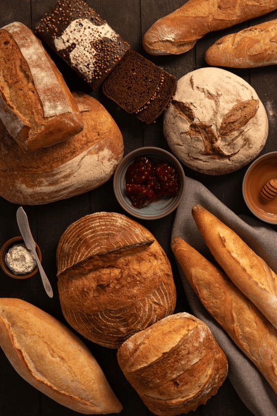

<!DOCTYPE html>
<html lang="en">
<head>
    <meta charset="UTF-8">
    <meta name="viewport" content="width=device-width, initial-scale=1.0">
    <style>
        body {
            font-family: Arial, sans-serif;
            max-width: 800px;
            margin: 0 auto;
            padding: 20px;
            background-color: rgb(228, 213, 194);
        }
        h1, h2 {
            color: #333;
        }
        #recipeContainer {
            border: 1px solid #ddd;
            padding: 20px;
            border-radius: 5px;
        }
        #idInput {
            margin-bottom: 10px;
        }
        img {
            width: 500px;
            height: 500px;
        }
        .steps-list {
            list-style-type: none;
        }
    </style>
</head>
<body>
    <div id="recipeContainer"></div>

    <script>
        async function fetchRecipe(recipeID) {
            try {
                // Use backticks for template literal to inject the recipeID
                const response = await fetch(`https://bakerymanagement-efgmhebnd5aggagn.eastus-01.azurewebsites.net/recipes/${recipeID}`);
                
                if (!response.ok) {
                    throw new Error('Recipe not found');
                }

                const recipe = await response.json();
                
                if (recipe) {
                    document.title = recipe.Name; // Set page title
                    
                    let html = `
                        <h1>${recipe.Name}</h1>
                        <h2>Category: ${recipe.Category}</h2>
                        <h2>Yield: ${recipe.Yield}</h2>
                         
                        <h3>Ingredients:</h3>
                        <ul class="ingredients-list">
                    `;
                    
                    // Loop through the ingredients and add them to the HTML
                    recipe.Ingredients.forEach(ingredient => {
                        html += `<li>${ingredient.Name}: ${ingredient.Quantity} ${ingredient.Measurement}</li>`;
                    });
                    
                    html += '</ul><h3>Steps:</h3><ul class="steps-list">';

                    // Split the steps by newline and add each as a list item
                    const steps = recipe.Steps.split('\\n').filter(step => step.trim() !== '');
                    steps.forEach(step => {
                        html += `<li>${step.trim()}</li>`;
                    });
                    
                    html += '</ul>';
                    
                    document.getElementById('recipeContainer').innerHTML = html;
                } else {
                    document.getElementById('recipeContainer').innerHTML = '<p>No recipe found with that ID.</p>';
                }
            } catch (error) {
                console.error('Error fetching recipe:', error);
                document.getElementById('recipeContainer').innerHTML = `<p>${error.message}. Please try again.</p>`;
            }
        }

        // Extract the recipe ID from the URL query parameters
        const params = new URLSearchParams(window.location.search);
        const recipeID = params.get('ID');

        // Fetch the recipe when the page loads
        window.onload = () => fetchRecipe(recipeID);
    </script>
</body>
</html>
